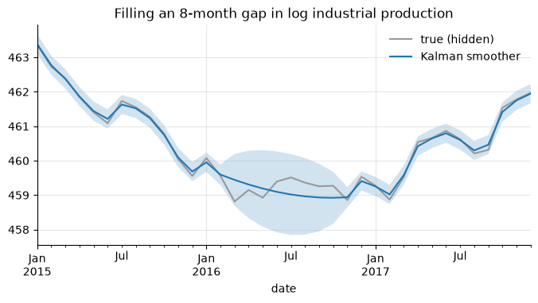
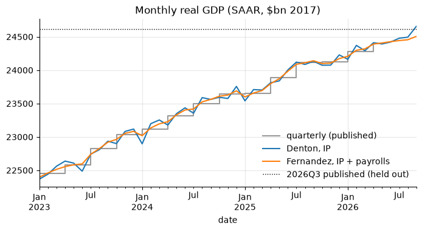

4. Interpolation and temporal disaggregation#
Two different problems share the word “interpolation”:
Filling gaps in a series observed at its own frequency (a missing month, market holidays).
Temporal disaggregation: building a monthly series from a quarterly one (or quarterly from annual) so that the high-frequency series adds up to the low-frequency one.
import numpy as np
import pandas as pd
import matplotlib.pyplot as plt
import statsmodels.api as sm
from econts import load
brent = load("DCOILBRENTEU")
ip = load("INDPRO")
gdp = load("GDPC1")
4.1. Filling gaps#
s = brent["2024-12-20":"2025-01-03"]
fills = pd.DataFrame(
{
"raw": s,
"ffill": s.ffill(), # last price carried forward
"linear": s.interpolate(), # equal steps per row
"time": s.interpolate(method="time"), # steps proportional to time
"pchip": s.interpolate(method="pchip"), # shape-preserving cubic
}
)
print(fills.round(2))
raw ffill linear time pchip
date
2024-12-20 73.19 73.19 73.19 73.19 73.19
2024-12-23 72.12 72.12 72.12 72.12 72.12
2024-12-24 73.50 73.50 73.50 73.50 73.50
2024-12-25 NaN 73.50 73.59 73.59 73.63
2024-12-26 NaN 73.50 73.68 73.68 73.69
2024-12-27 73.77 73.77 73.77 73.77 73.77
2024-12-30 74.24 74.24 74.24 74.24 74.24
2024-12-31 74.58 74.58 74.58 74.58 74.58
2025-01-01 NaN 74.58 75.36 75.36 75.31
2025-01-02 76.14 76.14 76.14 76.14 76.14
2025-01-03 76.72 76.72 76.72 76.72 76.72
linearignores the index,timerespects uneven spacing. They only differ when rows are unevenly spaced in time.pchipandakimaare smooth without overshooting;spline(order 3) can overshoot near sharp moves.limit=2caps how many consecutiveNaNare filled;limit_area="inside"refuses to extrapolate at the ends.
For prices, ffill is the market convention (the last traded price is the
price). For flows and smooth economic series, interpolate.
4.2. Gaps filled by a Kalman smoother#
A state-space model handles NaN natively: the Kalman filter skips the
update step and the smoother fills the gap with the model-consistent path,
along with an uncertainty band. A local linear trend on log IP:
y = 100 * np.log(ip["2010":"2019"]).asfreq("MS")
y_gap = y.copy()
y_gap["2016-03":"2016-10"] = np.nan # knock out eight months
mod = sm.tsa.UnobservedComponents(y_gap, level="local linear trend")
res = mod.fit(disp=False)
smoothed = pd.Series(res.level.smoothed, index=y.index)
band = 1.96 * np.sqrt(res.level.smoothed_cov)
gap = y_gap.isna()
print(
"RMSE in the gap: kalman",
np.sqrt(((smoothed - y)[gap] ** 2).mean()).round(3),
"| linear",
np.sqrt(((y_gap.interpolate() - y)[gap] ** 2).mean()).round(3),
)
ax = y["2015":"2017"].plot(color="0.6", label="true (hidden)")
smoothed["2015":"2017"].plot(ax=ax, label="Kalman smoother")
ax.fill_between(
y["2015":"2017"].index,
(smoothed - band)["2015":"2017"],
(smoothed + band)["2015":"2017"],
alpha=0.2,
)
ax.set_title("Filling an 8-month gap in log industrial production")
ax.legend()
RMSE in the gap: kalman 0.389 | linear 0.364
<matplotlib.legend.Legend at 0x11a91697770>

The smoother is no more accurate than a straight line here: a univariate
trend model can only draw a smooth path through the gap. What it adds is the
uncertainty band. Accuracy gains come from adding related series: a dynamic factor model or a
regression with ARMA errors (sm.tsa.SARIMAX(y, exog=X)) uses the other
series’ movements during the gap.
4.3. Temporal disaggregation#
The target: a monthly series \(x\) whose quarterly aggregate equals the published quarterly series \(Y\), i.e. \(C x = Y\). For a quarterly average \(C = I_n \otimes [\tfrac13\ \tfrac13\ \tfrac13]\); for a sum, drop the \(\tfrac13\).
First, why plain interpolation is wrong:
gdp_q = gdp["2015":"2019"]
naive = gdp_q.resample("MS").interpolate() # linear through quarter starts
back = naive.resample("QS").mean()
print((back / gdp_q - 1).dropna().abs().max()) # does not add up
0.003900006188636951
4.3.1. Denton (proportional first difference)#
Denton–Cholette keeps the ratio of the target to an indicator \(i_t\) as smooth as possible while meeting the constraint:
With a constant indicator, it is a smooth interpolation that adds up. It is a quadratic program with a closed-form solution:
def agg_matrix(n_low: int, n_high: int, m: int = 3, how: str = "mean") -> np.ndarray:
"""C such that C @ x aggregates consecutive blocks of m high-freq values."""
C = np.kron(np.eye(n_low), np.ones((1, m)))
C = np.hstack([C, np.zeros((n_low, n_high - m * n_low))]) # months beyond
return C / m if how == "mean" else C
def denton(
Y: pd.Series, indicator: pd.Series, m: int = 3, how: str = "mean"
) -> pd.Series:
"""Proportional Denton benchmarking of `indicator` to the low-frequency `Y`.
`indicator` must start in the first sub-period of `Y`'s first period. It may
run past `Y`'s last period; those months are extrapolated with the indicator.
"""
i = indicator.to_numpy(float)
T, n = len(i), len(Y)
C = agg_matrix(n, T, m, how)
D = np.diff(np.eye(T), axis=0) # first-difference operator
A = C * i # constraint in terms of r = x / i
K = np.block([[D.T @ D, A.T], [A, np.zeros((n, n))]])
rhs = np.concatenate([np.zeros(T), Y.to_numpy(float)])
r = np.linalg.solve(K, rhs)[:T]
return pd.Series(r * i, index=indicator.index, name=Y.name)
months = pd.date_range("2015-01-01", "2019-12-01", freq="MS")
smooth = denton(gdp_q, pd.Series(1.0, index=months))
print((smooth.resample("QS").mean() / gdp_q - 1).abs().max()) # ~1e-16: adds up
1.5543122344752192e-15
In your projects
The same recipe is in the econts toolkit:
from econts.disagg import denton
With an indicator, monthly GDP inherits the indicator’s monthly profile. When the indicator runs past the last published quarter, Denton also extrapolates. To see how well, hold out the latest quarter (2026Q3) and benchmark industrial production to GDP up to 2026Q2:
Y = gdp["2010":"2026-04"] # published GDP up to 2026Q2
target = gdp["2026-07-01"] # held out: 2026Q3
gdp_m_denton = denton(Y, ip["2010":"2026-09"])
print(gdp_m_denton.tail(6).round(0)) # Jul-Sep 2026 are extrapolated
date
2026-04-01 24411.0
2026-05-01 24392.0
2026-06-01 24421.0
2026-07-01 24478.0
2026-08-01 24494.0
2026-09-01 24656.0
Name: GDPC1, dtype: float64
4.3.2. Chow–Lin and Fernández (regression-based)#
Chow and Lin (1971) assume the monthly target follows a regression on indicators, \(x = X\beta + u\), with AR(1) errors \(u_t = \rho u_{t-1} + \varepsilon_t\). Only \(Y = C x\) is observed, so \(\beta\) is estimated by GLS on the aggregated model, \(\rho\) by maximum likelihood, and the quarterly residuals are distributed across months. Fernández (1981) is the limit \(\rho = 1\), random-walk errors, for when target and indicators do not cointegrate. Both are standard at Eurostat and national statistical offices.
from scipy.optimize import minimize_scalar
def regression_disagg(
Y: pd.Series,
X: pd.DataFrame,
method: str = "chow-lin",
m: int = 3,
how: str = "mean",
):
"""Chow-Lin (AR(1) errors) or Fernandez (random-walk errors) disaggregation.
Returns the high-frequency series and a dict with beta and rho.
"""
Xh = sm.add_constant(X).to_numpy(float)
T, n = len(Xh), len(Y)
C = agg_matrix(n, T, m, how)
y, Xl = Y.to_numpy(float), C @ Xh
t = np.arange(T)
def gls(rho):
if method == "fernandez":
S = np.minimum.outer(t, t) + 1.0 # random walk from 0
else:
S = rho ** np.abs(np.subtract.outer(t, t)) / (1 - rho**2)
V = C @ S @ C.T
Vi = np.linalg.inv(V)
beta = np.linalg.solve(Xl.T @ Vi @ Xl, Xl.T @ Vi @ y)
e = y - Xl @ beta
loglik = -0.5 * (n * np.log(e @ Vi @ e / n) + np.linalg.slogdet(V)[1])
return beta, e, S, Vi, loglik
rho = 1.0
if method == "chow-lin":
rho = minimize_scalar(
lambda r: -gls(r)[-1], bounds=(0.0, 0.99), method="bounded"
).x
beta, e, S, Vi, _ = gls(rho)
x = Xh @ beta + S @ C.T @ Vi @ e # regression + distributed residual
return pd.Series(x, index=X.index, name=Y.name), {"beta": beta, "rho": rho}
X = pd.DataFrame({"ip": ip, "payems": load("PAYEMS")})["2010":"2026-09"]
gdp_m_cl, info = regression_disagg(Y, X, "chow-lin")
gdp_m_fe, _ = regression_disagg(Y, X, "fernandez")
print("Chow-Lin rho =", round(info["rho"], 3))
print((gdp_m_fe[: 3 * len(Y)].resample("QS").mean() / Y - 1).abs().max()) # adds up
Chow-Lin rho = 0.99
2.1760371282653068e-14
In your projects
The same recipe is in the econts toolkit:
from econts.disagg import chow_lin, fernandez
The Chow–Lin \(\hat\rho\) sits at the upper bound: the regression residual is close to a random walk, which is the case Fernández is built for. How do the methods do on the held-out quarter?
nowcast = pd.Series(
{
"no change (2026Q2 level)": Y.iloc[-1],
"Denton, IP": gdp_m_denton["2026-07":].mean(),
"Chow-Lin, IP + payrolls": gdp_m_cl["2026-07":].mean(),
"Fernandez, IP + payrolls": gdp_m_fe["2026-07":].mean(),
}
)
print((100 * (nowcast / target - 1)).round(2).rename("error vs published 2026Q3, %"))
no change (2026Q2 level) -0.83
Denton, IP -0.28
Chow-Lin, IP + payrolls -0.88
Fernandez, IP + payrolls -0.58
Name: error vs published 2026Q3, %, dtype: float64
All three indicator methods beat “no change” on this quarter, and Denton wins it. One quarter proves little: before choosing a method for production work, repeat the exercise over many held-out quarters.
fig, ax = plt.subplots()
window = slice("2023-01", None)
Y[window].resample("MS").ffill().plot(
ax=ax, color="0.6", drawstyle="steps-post", label="quarterly (published)"
)
gdp_m_denton[window].plot(ax=ax, label="Denton, IP")
gdp_m_fe[window].plot(ax=ax, label="Fernandez, IP + payrolls")
ax.axhline(target, color="k", ls=":", lw=1, label="2026Q3 published (held out)")
ax.set_title("Monthly real GDP (SAAR, $bn 2017)")
ax.legend()
<matplotlib.legend.Legend at 0x11a95822c10>

Choosing: Denton when you trust the indicator’s profile and only need
it benchmarked; Chow–Lin when target and indicators cointegrate (residual
stationary, \(\hat\rho\) well inside the unit interval); Fernández or Litterman
when \(\hat\rho\) runs to 1. R’s tempdisagg package implements all of them and
is the reference to check against.
4.4. Pitfalls#
Disaggregate levels, not growth rates, and choose sum vs mean to match the series (chapter 3).
Interpolated or disaggregated values are estimates. Using them as data in a regression understates standard errors.
Seasonally adjusted low-frequency data with an NSA indicator (or the other way round) produces spurious seasonal patterns in the result.
4.5. Summary#
Short gaps in a smooth series:
interpolate(method="time").Gaps in a series that moves with others: a state-space model (Kalman smoother) or a regression on related series.
Low → high frequency: never plain
interpolate, it breaks the aggregation constraint. Use Denton (no or one indicator) or Chow-Lin (one or more indicators, estimated by GLS).
4.6. Exercises#
Remove two weeks of daily Brent (
DCOILBRENTEU, 4–15 March 2024) and fill them withffill, linear, time andpchipinterpolation. Which method has the smallest error against the true prices, and which would you choose for a price series?Repeat the Kalman-smoother gap experiment on log industrial production (
INDPRO, 2010–2019) with gaps of 3, 8 and 12 months. How do the RMSE in the gap and the width of the 95% band change with the gap length, compared with linear interpolation?Disaggregate real GDP (
GDPC1) to monthly for 2019–2021 with Denton, once with a constant indicator and once with industrial production (INDPRO). Check that both average to the published quarters, and compare the monthly paths in March–May 2020: which is more plausible?The chapter evaluates the nowcast on one held-out quarter. Repeat it for every quarter from 2012Q1 to 2019Q4 for Denton (IP) and Chow–Lin (IP and payrolls), and compute the RMSE of each against “no change”. Does Denton’s win in 2026Q3 survive?